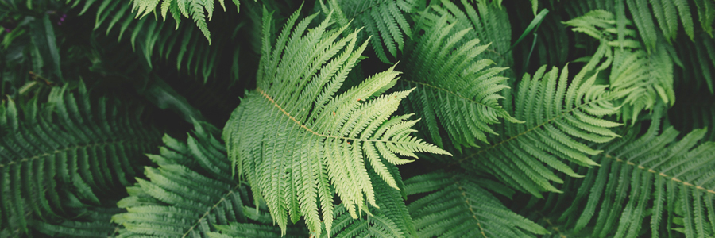
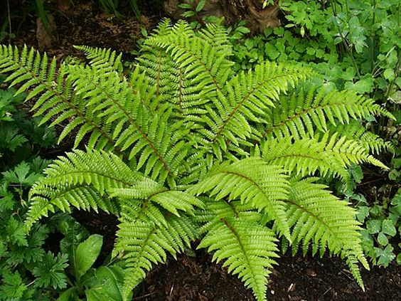

<div class="container margin-70-top formatBox border-radius">
    <div class="row control-item">
        <div class="text-one position-right-30 padding-40 position-top-50">
            <div>
                <h1>Samambaia</h1>
                <p>
                    Você sabia que, as Samambaias é umas das espécies de plantas mais antigas na Terra?
                    Pois é, com sua existência de aproximadamente 200 milhoes de anos, isto é, desde época dos
                    Dinossauros.
                    As Samambaias são de caracteristicas muito simples que não produzem frutos e nem flores mas, que
                    possuem
                    uma folha super ornamental, exelente
                    para cultivar dentro de casa ou em jardins
                </p>
                <p>
                    Por ser fácil de cuidar, se desenvolve bem tanto em casas quanto em apartamentos e podem ser
                    encontradas em
                    diversos tamanhos, e possuem 12 mil espécies em todo o mundo, das quais mais de mil podem ser
                    encontradas
                    no Brasil.
                </p>
            </div>
        </div>

        <div class="widthImg color-white text-align-right position-left-70 position-top-55 padding-30 margin-top-10 border-radius-box">
            
        </div>

        <div class="text-one position-right-30 padding-40 position-top-50">
            <div>
                <h4>Como cuidar</h4>
                <p>
                    Para manter suas Samambaias bonitas, é fundamental que, você coloque-as distante de ar corrente,
                    poís, este fenomeno
                    pode causar ressecamento da planta e as pequenas folhagens de cada ramo se desprendam ou amarelem.
                </p>

                <p>
                    Mantenham sempre o substrato úmido, porem, este recurso dará mais vida longa às Samambaias.
                    Evite encharcar suas raízes, com o excesso de água pode estragar suas raizes e levando a morte da
                    planta.
                    Sol direto sobre a planta não é recomendado - uma boa dose de claridade ao longo do dia já é o
                    suficiente para o seu
                    sustento. Mês á cada mês, não se esqueça de adubar sua companheira de lar com misturas orgânicas,
                    casquinha de ovo, húmus de
                    minhoca, torta de mamona e farinha de osso, sempre com quantidade pequena.
                </p>

                <h4>Ciclo de vida</h4>
                <p>
                    O ciclo de vida das samambaias é consideravelmente distinto do de outras plantas, possuindo
                    alternância de
                    gerações entre um esporófito diploide e um gametófito haploide. Inicialmente, o esporófito (2n), que
                    é a
                    samambaia propriamente dita, produz esporos haploides (n) através da meiose. Após a dispersão, esses
                    esporos
                    crescem por mitoses em um gametófito (n), que é chamado de protalo, um estágio de vida curta com
                    capacidade
                    fotossintética. Este protalo produz gametas (n) tanto masculinos quanto femininos através de
                    mitoses. O
                    gameta masculino, que é flagelado, fertiliza o gameta feminino, que é imóvel e permanece aderido ao
                    protalo.
                    O ovo fertilizado forma o zigoto (2n) de um novo esporófito (formando uma nova samambaia).
                </p>
            </div>

            <div class="format-info bgColor-6bb88a padding-50">
                <h4>Curiosidade</h4>
                <label>
                    Algumas espécies de samambaias são consideradas invasoras e tratadas como pragas por ameaçar a
                    biodiversidade. Este é o caso da samambaia australiana (Cyathea cooperi) que foi introduzida no
                    Havaí e
                    hoje cresce sem controle, competindo com a vegetação nativa.
                </label>
            </div>

            <div class="btn-next">
                <button routerLink="/textTwo" class="width-height-btn btn-radius-format bgColor-btn">Próximo</button>
            </div>
        </div>
    </div>
</div>


<!--
    <div class="container">
        
    <div class="row col-12">
        <div class="col col-4 widthImg">
            
            <div class="description">
                <h3>Classificação científica</h3>
                <ul>
                    <li>Reino: Plantae</li>
                    <li>Divisão: Monilophyta</li>
                </ul>
                <ul>
                    <label>Classes</label>
                    <li>Psilotopsida</li>
                    <li>Marattiopsida</li>
                    <li>Polypodiopsida</li>
                </ul>
            </div>
        </div>
        <div class="col font-style-text bgColor">
            <h4>Samambaia</h4>
            <label>

            </label>
        </div>
    </div>
</div>
-->